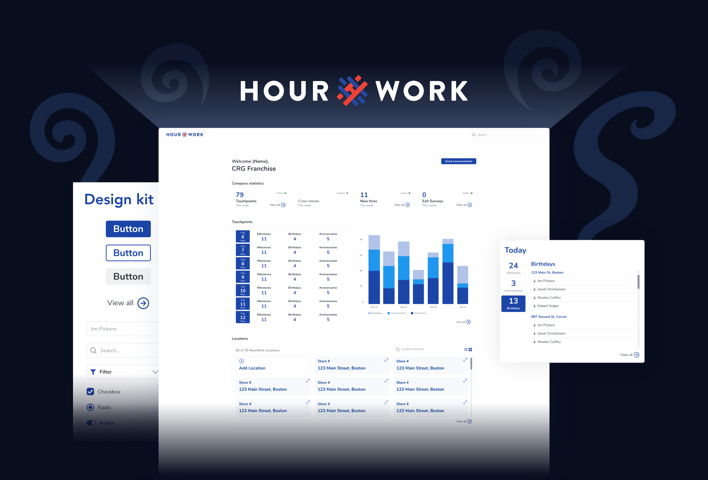
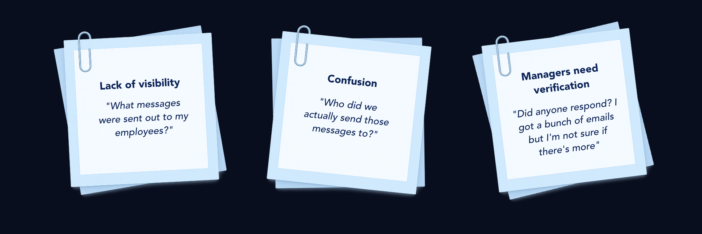
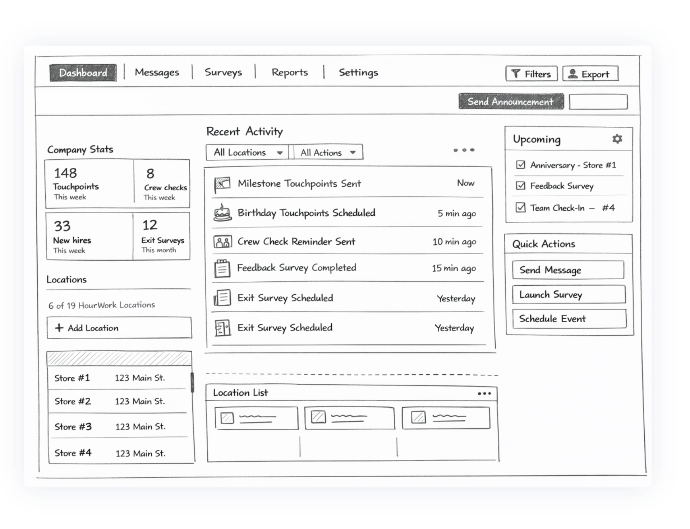
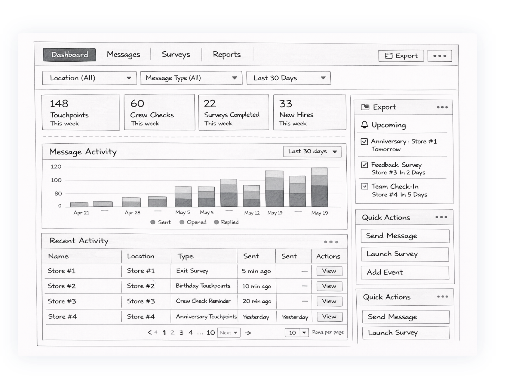
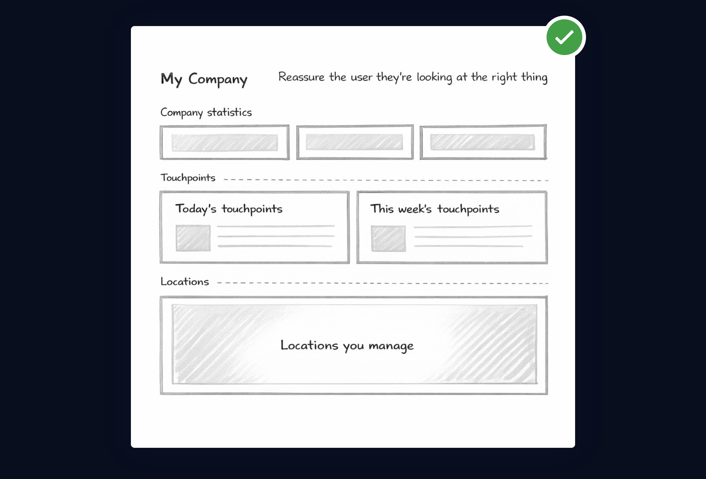
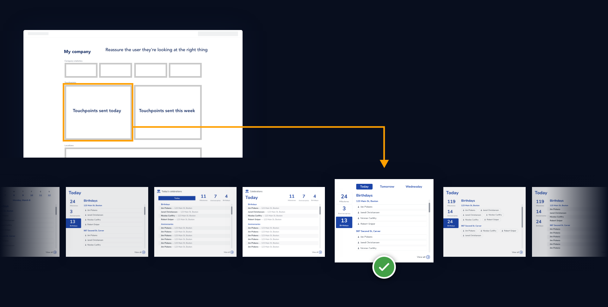
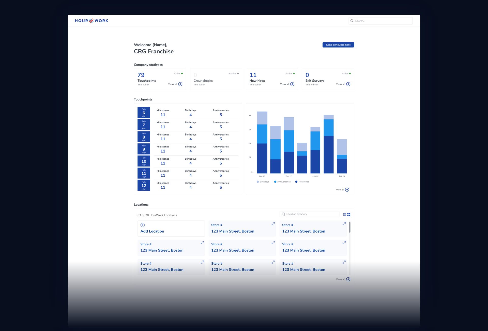

Designing for clarity
in a noisy system.
How I led the UX process for a manager dashboard that had to be fast, trustworthy, and hard to mess up — collaborating with a design partner and handing off to a dev team.

The problem
worth solving.
HourWork helps restaurant franchise owners manage their hourly workforce — automated messaging, milestone touchpoints, re-engagement campaigns. It's powerful. But as the platform scaled, managers had a growing problem: they had no visibility into what it was actually doing on their behalf.
As HourWork's automated messaging scaled across more locations, managers lacked visibility into what was happening across their teams.
Store owners needed a way to quickly understand employee engagement — not a report, not an export. An answer at a glance.
A single dashboard that helps managers understand what messages are being sent, what's coming up, and how employees are responding across locations.
The goal wasn't to surface more information. It was to surface the right information — clearly and fast.
A few months to design the dashboard and its supporting pages — fast enough that decisions had to be made with confidence, not comfort. There was no time to explore every direction thoroughly.
HourWork didn't have a formalized design system. We built components, patterns, and visual language as we went — making foundational decisions under production pressure while keeping the output consistent.
My contribution on this project
I worked alongside another UX designer. The research, design direction, and ongoing critique were collaborative. The design work itself — every screen, every iteration, every decision about what to show and how to show it — was mine to execute and own.
How I approach
a design problem.
With the problem understood, I follow a structured process — not rigidly, but as a framework to make sure I'm building from the right foundation before committing to solutions.
Stakeholder alignment · Scope · Constraints
User context · Environment · Competitive
Wireframes · Directions · Rejected ideas
Hi-fi · Interaction · Structural decisions
User testing · Insights · Iteration
Initial problem
discovery.
Before designing anything, I needed to understand how the system was actually being used — and where it was falling short for managers.
I started by talking with the team and reviewing questions coming in from customers. A clear pattern showed up quickly: managers weren't confused about how to send messages. They were confused about what the platform was doing on their behalf.

Discovery synthesis — mapping confusion patterns from support tickets and stakeholder interviews.
"This wasn't just a missing dashboard — it was a visibility gap that limited trust and made the product hard to use confidently."
Problem reframe, post-discoveryMy focus at this stage was defining what managers needed to understand at a glance in order to feel confident using the platform — and what information mattered most to get there.
What we found
about our users.
Once the problem space was clearer, the next step was pressure-testing our assumptions. Who was this dashboard actually for? How would it be used in real life?
Most managers were accessing HourWork on a shared computer during short breaks. They weren't tech-savvy — they were not interested in learning a complex system.
That context made the priority obvious: the dashboard needed to be fast to read, predictable, and hard to mess up. Visual flair mattered far less than clarity.

Research synthesis — usage environment, mental models, and patterns from competitive review.
"This dashboard wasn't a place to show off. It needed to stay out of the way and let managers get what they needed quickly."
Research conclusion — shaped everything that followedWireframing —
testing the wrong ideas first.
Wireframes are where ideas get pressure-tested. I use them to explore multiple directions quickly, challenge assumptions, and understand tradeoffs before committing to a solution.

Advanced filters, detailed charts, full activity logs. Promised total visibility and seemed scalable long term.
Required setup before it became useful. Managers needed quick reassurance, not a reporting tool.

Real-time feed surfacing every message and response chronologically. Created a sense of transparency.
Became noisy quickly. Hard to spot meaningful patterns or upcoming milestones. Added distraction instead of clarity.

The chosen structure — separating short-term and longer-term information to reduce mental overhead.
The structure that won
This layout separated short-term and longer-term information, making it easier to scan and reducing mental overhead. With the structure confirmed, the focus shifted to refining how the dashboard should look and behave.
First designs —
making the structure come alive.
With the layout in place, the focus shifted to how each section actually communicated information. We knew what needed to be shown — the question was how to present it so it was fast and intuitive to read.
I explored different treatments for each module, adjusting levels of detail and visual hierarchy. Many options were cut when they added density or forced too much interpretation.

Prototype review — each module annotated with pass/fail. X marks flagged anything adding density or requiring interpretation.
Working with my design partner, we evaluated each module against one criterion: can a manager understand this in under three seconds? If uncertain — cut or simplify.

Iterating individual modules — approved layout as the framework, pieces placed and tested one section at a time.
Find the best design for each module independently. Make as many iterations as needed. Work with the team to pick the best one — then move on. Don't optimize the whole when you can optimize each part.
Testing — where the
design gets honest.
With a prototype in place, the next step was putting it in front of managers to test the assumptions behind the design. The goal wasn't aesthetic feedback — it was clarity.
We focused on three questions. Can they quickly understand what's happening across their stores? Do they know where to click without instruction? Does the hierarchy match how they think about their day?

Testing session — annotated with specific friction points caught before dev handoff.
Friction Point Caught
Through testing, we found it was hard to recognize a key element as clickable. Users were missing a primary action pathway — not because the design was broken, but because the visual treatment didn't signal interactivity. Iterated and fixed before handoff.
"Testing doesn't invalidate the design. It makes the handoff cleaner — you ship with confidence instead of hope."
On the value of validate before dev handoff
Final production dashboard — handed off with annotated specs, component notes, and interaction documentation.
Early signals —
before the acquisition.
HourWork was acquired shortly after the dashboard launched, which cut short our ability to gather long-term data. But the early signals — in the weeks between launch and acquisition — pointed clearly in the right direction.
Managers had no consolidated view of what the platform was doing. Questions like "what messages went out this week?" required contacting support or manually piecing together information from different parts of the product.
The platform was powerful but opaque. Users who weren't fully onboarded often didn't trust it — or didn't use it.
Managers could answer their own questions at a glance. The dashboard gave them the confidence to operate the platform independently — seeing activity, upcoming events, and engagement across locations without friction.
Early feedback pointed to a meaningful shift: managers felt like they owned the platform, not just used it.
"The most valuable thing a dashboard can do isn't show more data — it's remove the need to ask someone else for it."
The design insight this project reinforcedWhat I'd push
further next time.
Looking back, the design solved the right problem well. But the more I understood how different franchise owners operated, the more clearly I saw an opportunity we didn't have time to pursue.
The product deserved more configurability
Franchise owners vary enormously — a single-location owner has completely different priorities than someone managing 20 stores. The dashboard we built gave everyone the same view. Given more runway, I'd push toward a more configurable system: letting owners choose what they see, weighted to how they actually run their business. The data was there. The architecture just didn't surface it that way yet.
Clarity beats delight when users are time-pressured
The most impactful decisions on this project were subtractive. Removing things — a chart, a filter, a widget — consistently outperformed adding them. That became a working principle I've carried forward: if you're unsure whether something helps, it probably doesn't.
Building a design system under pressure is a different skill
Designing without a system forced me to make decisions that would have to scale. Some of them held up well; others became technical debt the team had to manage. I learned that the cost of inconsistency compounds — and that investing in shared patterns early, even imperfect ones, pays off faster than most teams expect.
Process gives you something to defend
Working through a structured process — even quickly — meant every decision had a reason behind it. When the team pushed back on a direction, I could explain the tradeoff clearly. That made collaboration faster and handoffs cleaner. It's a skill I'll take into every project.
I can move through a full design process with rigor — from discovery to dev handoff — while making the reasoning visible at every step. That combination of process discipline, clear communication, and the judgment to know when to stop adding things is what makes work shippable.